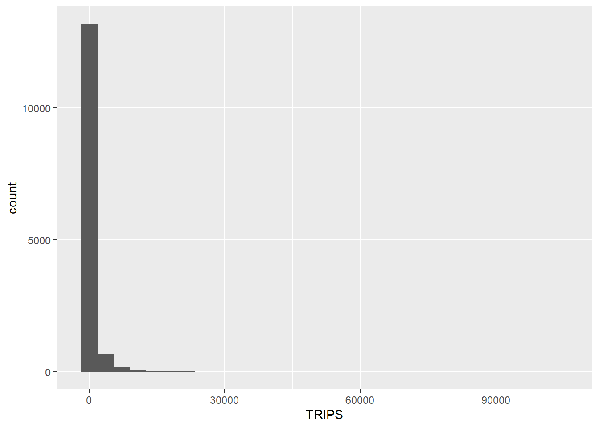

Code
pacman::p_load(tmap, sf, sp, DT, performance,reshape2, ggupbr, units, tidyverse)Spatial Interaction Models (SIMs), developed by Alan Wilson in the late 1960s, estimate flows between spatial entities. Traditionally, there are four types: Unconstrained, Production-constrained, Attraction-constrained, and Doubly-constrained. This chapter explores hands-on calibration of SIM using Ordinary Least Square (OLS), log-normal, Poisson, and negative binomial regression methods. Calibration involves adjusting parameters to align model estimates with observed data, facilitated by computer iterative processes. The exercise focuses on calibrating SIM to understand factors influencing public bus passenger flows during the morning peak in Singapore.
In this exercise, we are going to calibrate SIM to determine factors affecting the public bus passenger flows during the morning peak in Singapore.
pacman::p_load(tmap, sf, sp, DT, performance,reshape2, ggupbr, units, tidyverse)tmap for creating thematic maps.sf for importing, integrating, processing and transforming geospatial data.sp is for storing special polygon dataframe in which the processes will be more efficient withtidyverse for importing, integrating, wrangling and visualising data.performance for checking model performance.reshape2 for doing certain processes in which it’s more efficient compared to tidyverse? (it’s an old package).Continuing from the Hands-on Exercise 3, this exercise utilizes two key datasets:
Additionally, an attribute data file named pop.csv will be used as well.
mpsz <- read_rds("../data/rds/mpsz.rds")
mpszSimple feature collection with 332 features and 6 fields
Geometry type: MULTIPOLYGON
Dimension: XY
Bounding box: xmin: 2667.538 ymin: 15748.72 xmax: 56396.44 ymax: 50256.33
Projected CRS: SVY21 / Singapore TM
First 10 features:
SUBZONE_N SUBZONE_C PLN_AREA_N PLN_AREA_C REGION_N
1 MARINA EAST MESZ01 MARINA EAST ME CENTRAL REGION
2 INSTITUTION HILL RVSZ05 RIVER VALLEY RV CENTRAL REGION
3 ROBERTSON QUAY SRSZ01 SINGAPORE RIVER SR CENTRAL REGION
4 JURONG ISLAND AND BUKOM WISZ01 WESTERN ISLANDS WI WEST REGION
5 FORT CANNING MUSZ02 MUSEUM MU CENTRAL REGION
6 MARINA EAST (MP) MPSZ05 MARINE PARADE MP CENTRAL REGION
7 SUDONG WISZ03 WESTERN ISLANDS WI WEST REGION
8 SEMAKAU WISZ02 WESTERN ISLANDS WI WEST REGION
9 SOUTHERN GROUP SISZ02 SOUTHERN ISLANDS SI CENTRAL REGION
10 SENTOSA SISZ01 SOUTHERN ISLANDS SI CENTRAL REGION
REGION_C geometry
1 CR MULTIPOLYGON (((33222.98 29...
2 CR MULTIPOLYGON (((28481.45 30...
3 CR MULTIPOLYGON (((28087.34 30...
4 WR MULTIPOLYGON (((14557.7 304...
5 CR MULTIPOLYGON (((29542.53 31...
6 CR MULTIPOLYGON (((35279.55 30...
7 WR MULTIPOLYGON (((15772.59 21...
8 WR MULTIPOLYGON (((19843.41 21...
9 CR MULTIPOLYGON (((30870.53 22...
10 CR MULTIPOLYGON (((26879.04 26...Notice that the previous imported data is a sf tibble dataframe object class. Computing distance can take longer with the sf based data. To make it faster, use Spatial Polygons Dataframe. Conver the data using as.Spatial().
mpsz_sp <- as(mpsz, "Spatial")
mpsz_spclass : SpatialPolygonsDataFrame
features : 332
extent : 2667.538, 56396.44, 15748.72, 50256.33 (xmin, xmax, ymin, ymax)
crs : +proj=tmerc +lat_0=1.36666666666667 +lon_0=103.833333333333 +k=1 +x_0=28001.642 +y_0=38744.572 +ellps=WGS84 +towgs84=0,0,0,0,0,0,0 +units=m +no_defs
variables : 6
names : SUBZONE_N, SUBZONE_C, PLN_AREA_N, PLN_AREA_C, REGION_N, REGION_C
min values : ADMIRALTY, AMSZ01, ANG MO KIO, AM, CENTRAL REGION, CR
max values : YUNNAN, YSSZ09, YISHUN, YS, WEST REGION, WR Next, spDists() of sp package will be used to compute the Euclidean distance between the centroids of the planning subzones.
Do you know why the distance is calculated between two centroids of a pair of spatial polygons? The distance between two centroids of spatial polygons is commonly calculated as a measure of proximity or spatial relationship between the polygons. This approach simplifies spatial analysis by representing each polygon as a single point (centroid), providing a straightforward measure of the overall spatial separation or closeness between the features.
# generate generic R Matrix object
dist <- spDists(mpsz_sp,
longlat = FALSE)
# show the output
head(dist, n=c(10, 10)) [,1] [,2] [,3] [,4] [,5] [,6] [,7]
[1,] 0.000 3926.0025 3939.108 20252.964 2989.9839 1431.330 19211.836
[2,] 3926.003 0.0000 305.737 16513.865 951.8314 5254.066 16242.523
[3,] 3939.108 305.7370 0.000 16412.062 1045.9088 5299.849 16026.146
[4,] 20252.964 16513.8648 16412.062 0.000 17450.3044 21665.795 7229.017
[5,] 2989.984 951.8314 1045.909 17450.304 0.0000 4303.232 17020.916
[6,] 1431.330 5254.0664 5299.849 21665.795 4303.2323 0.000 20617.082
[7,] 19211.836 16242.5230 16026.146 7229.017 17020.9161 20617.082 0.000
[8,] 14960.942 12749.4101 12477.871 11284.279 13336.0421 16281.453 5606.082
[9,] 7515.256 7934.8082 7649.776 18427.503 7801.6163 8403.896 14810.930
[10,] 6391.342 4975.0021 4669.295 15469.566 5226.8731 7707.091 13111.391
[,8] [,9] [,10]
[1,] 14960.942 7515.256 6391.342
[2,] 12749.410 7934.808 4975.002
[3,] 12477.871 7649.776 4669.295
[4,] 11284.279 18427.503 15469.566
[5,] 13336.042 7801.616 5226.873
[6,] 16281.453 8403.896 7707.091
[7,] 5606.082 14810.930 13111.391
[8,] 0.000 9472.024 8575.490
[9,] 9472.024 0.000 3780.800
[10,] 8575.490 3780.800 0.000Output of dist is a matrix object class of R that does not have any column headers and row headers are not labeled with the planning subzone codes. Therefore the next step is to label it.
Create list of the headers
sz_names <- mpsz$SUBZONE_C
# check the output
sz_namesattach SUBZONE_C to row and column for distance matrix matching ahead
colnames(dist) <- paste0(sz_names)
rownames(dist) <- paste0(sz_names)Next, pivot the distance matrix into a long table by using the row and column subzone codes using this code.
distPair <- melt(dist) %>%
rename(dist = value)
head(distPair, 10)do not sort the data because the sequence will be broken
In this section, we are going to append a constant value to replace the intra-zonal distance of 0.
First, we will select and find out the minimum value of the distance by using summary().
distPair %>%
filter(dist > 0) %>%
summary()The constant distant selected for intra-zones must be below the minimum distance (173.8). 50m is picked as the fix distance to be put into intra-zones distance.
distPair$dist <- ifelse(distPair$dist == 0,
50, distPair$dist)
# check the output
summary(distPair)notice that the minimum value has change (i.e. 0 within-distance has changed to 50)
The code chunk below is used to rename the origin and destination fields.
distPair <- distPair %>%
rename(orig = Var1,
dest = Var2)Lastly, the code chunk below is used to save the dataframe for future use.
write_rds(distPair, "../data/rds/distPair.rds") The code chunk below is used import od_data save in Chapter 15 into R environment.
od_data <- read_rds("../data/rds/od_data.rds")Next, we will compute the total passenger trip between and within planning subzones by using the code chunk below. The output is all flow_data.
flow_data <- od_data %>%
group_by(ORIGIN_SZ, DESTIN_SZ) %>%
summarize(TRIPS = sum(MORNING_PEAK)) Use the code chunk below to display flow_data dataframe.
head(flow_data, 10)Code chunk below is used to add three new fields in flow_data dataframe.
flow_data$FlowNoIntra <- ifelse(
flow_data$ORIGIN_SZ == flow_data$DESTIN_SZ,
0, flow_data$TRIPS)
flow_data$offset <- ifelse(
flow_data$ORIGIN_SZ == flow_data$DESTIN_SZ,
0.000001, 1)Before we can join flow_data and distPair, we need to convert data value type of ORIGIN_SZ and DESTIN_SZ fields of flow_data dataframe into factor data type.
flow_data$ORIGIN_SZ <- as.factor(flow_data$ORIGIN_SZ)
flow_data$DESTIN_SZ <- as.factor(flow_data$DESTIN_SZ)Now, left_join() of dplyr will be used to flow_data dataframe and distPair dataframe. The output is called flow_data1.
flow_data1 <- flow_data %>%
left_join (distPair,
by = c("ORIGIN_SZ" = "orig",
"DESTIN_SZ" = "dest"))
# check the output
print(flow_data1)pop <- read_csv("../data/aspatial/pop.csv")
# check the output
poppop <- pop %>%
left_join(mpsz,
by = c("PA" = "PLN_AREA_N",
"SZ" = "SUBZONE_N")) %>%
select(1:6) %>%
rename(SZ_NAME = SZ,
SZ = SUBZONE_C)
# check the output
glimpse(pop)this is the useful trick of how to merge two table that has different reference column.
# Preparing origin attribute
flow_data1 <- flow_data1 %>%
left_join(pop,
by = c(ORIGIN_SZ = "SZ")) %>%
rename(ORIGIN_AGE7_12 = AGE7_12,
ORIGIN_AGE13_24 = AGE13_24,
ORIGIN_AGE25_64 = AGE25_64) %>%
select(-c(PA, SZ_NAME))
# Preparing destination attribute
flow_data1 <- flow_data1 %>%
left_join(pop,
# use a subzone code
by = c(DESTIN_SZ = "SZ")) %>%
rename(DESTIN_AGE7_12 = AGE7_12,
DESTIN_AGE13_24 = AGE13_24,
DESTIN_AGE25_64 = AGE25_64) %>%
select(-c(PA, SZ_NAME))Instead of doing simple join, this join use origin subzone code and destination subzone code. Having population for both is useful for the transport planning analysis as depending on the case, you might need to look at either the origin or destination population. It also conform with the general factors of geospatial flow analysis which consists of push and pull factors
We will called the output data file SIM_data. it is in rds data file format.
write_rds(flow_data1, "../data/rds/SIM_data")In this section, you will learn how to calibrate Spatial Interaction Models by using Poisson Regression method.
Firstly, let us import the modelling data by using the code chunk below.
SIM_data <- read_rds("../data/rds/SIM_data.rds")
# check the output
glimpse(SIM_data)Rows: 14,274
Columns: 12
Groups: ORIGIN_SZ [279]
$ ORIGIN_SZ <chr> "AMSZ01", "AMSZ01", "AMSZ01", "AMSZ01", "AMSZ01", "AMS…
$ DESTIN_SZ <chr> "AMSZ02", "AMSZ03", "AMSZ04", "AMSZ05", "AMSZ06", "AMS…
$ TRIPS <dbl> 6790, 7242, 2048, 4594, 1767, 1136, 1703, 1494, 41, 39…
$ FlowNoIntra <dbl> 6790, 7242, 2048, 4594, 1767, 1136, 1703, 1494, 41, 39…
$ offset <dbl> 1, 1, 1, 1, 1, 1, 1, 1, 1, 1, 1, 1, 1, 1, 1, 1, 1, 1, …
$ dist <dbl> 810.4491, 1360.9294, 840.4432, 1076.7916, 805.2979, 17…
$ ORIGIN_AGE7_12 <dbl> 310, 310, 310, 310, 310, 310, 310, 310, 310, 310, 310,…
$ ORIGIN_AGE13_24 <dbl> 710, 710, 710, 710, 710, 710, 710, 710, 710, 710, 710,…
$ ORIGIN_AGE25_64 <dbl> 2780, 2780, 2780, 2780, 2780, 2780, 2780, 2780, 2780, …
$ DESTIN_AGE7_12 <dbl> 1140, 1010, 980, 810, 1050, 420, 390, 1190, 0, 0, 260,…
$ DESTIN_AGE13_24 <dbl> 2770, 2650, 2000, 1920, 2390, 1120, 1150, 3260, 0, 0, …
$ DESTIN_AGE25_64 <dbl> 15700, 14240, 11320, 9650, 12460, 3620, 4350, 13350, 0…Firstly, let us plot the distribution of the dependent variable (i.e. TRIPS) by using histogram method by using the code chunk below.
ggplot(data = SIM_data,
aes(x = TRIPS)) +
geom_histogram()
Notice that the distribution is highly skewed and not resemble bell shape or also known as normal distribution.
Next, let us visualise the relation between the dependent variable and one of the key independent variable in Spatial Interaction Model, namely distance.
ggplot(data = SIM_data,
aes(x = dist,
y = TRIPS)) +
geom_point() +
geom_smooth(method = lm)
Notice that their relationship hardly resemble linear relationship.
On the other hand, if we plot the scatter plot by using the log transformed version of both variables, we can see that their relationship is more resemble linear relationship.
ggplot(data = SIM_data,
aes(x = log(dist),
y = log(TRIPS))) +
geom_point() +
geom_smooth(method = lm)
Since Poisson Regression is based of log and log 0 is undefined, it is important for us to ensure that no 0 values in the explanatory variables.
In the code chunk below, summary() of Base R is used to compute the summary statistics of all variables in SIM_data data frame.
summary(SIM_data) ORIGIN_SZ DESTIN_SZ TRIPS FlowNoIntra
Length:14274 Length:14274 Min. : 1.0 Min. : 1.0
Class :character Class :character 1st Qu.: 11.0 1st Qu.: 11.0
Mode :character Mode :character Median : 56.0 Median : 56.0
Mean : 664.3 Mean : 664.3
3rd Qu.: 296.0 3rd Qu.: 296.0
Max. :104167.0 Max. :104167.0
offset dist ORIGIN_AGE7_12 ORIGIN_AGE13_24 ORIGIN_AGE25_64
Min. :1 Min. : 173.8 Min. : 0 Min. : 0 Min. : 0
1st Qu.:1 1st Qu.: 3465.4 1st Qu.: 240 1st Qu.: 460 1st Qu.: 2210
Median :1 Median : 6121.0 Median : 710 Median : 1400 Median : 7030
Mean :1 Mean : 6951.8 Mean :1037 Mean : 2278 Mean :10536
3rd Qu.:1 3rd Qu.: 9725.1 3rd Qu.:1500 3rd Qu.: 3282 3rd Qu.:15830
Max. :1 Max. :26135.8 Max. :6340 Max. :16380 Max. :74610
DESTIN_AGE7_12 DESTIN_AGE13_24 DESTIN_AGE25_64
Min. : 0 Min. : 0 Min. : 0
1st Qu.: 250 1st Qu.: 460 1st Qu.: 2210
Median : 720 Median : 1430 Median : 7120
Mean :1040 Mean : 2305 Mean :10648
3rd Qu.:1500 3rd Qu.: 3290 3rd Qu.:15830
Max. :6340 Max. :16380 Max. :74610 The print report above reveals that variables ORIGIN_AGE7_12, ORIGIN_AGE13_24, ORIGIN_AGE25_64,DESTIN_AGE7_12, DESTIN_AGE13_24, DESTIN_AGE25_64 consist of 0 values.
In view of this, code chunk below will be used to replace zero values to 0.99.
SIM_data$DESTIN_AGE7_12 <- ifelse(
SIM_data$DESTIN_AGE7_12 == 0,
0.99, SIM_data$DESTIN_AGE7_12)
SIM_data$DESTIN_AGE13_24 <- ifelse(
SIM_data$DESTIN_AGE13_24 == 0,
0.99, SIM_data$DESTIN_AGE13_24)
SIM_data$DESTIN_AGE25_64 <- ifelse(
SIM_data$DESTIN_AGE25_64 == 0,
0.99, SIM_data$DESTIN_AGE25_64)
SIM_data$ORIGIN_AGE7_12 <- ifelse(
SIM_data$ORIGIN_AGE7_12 == 0,
0.99, SIM_data$ORIGIN_AGE7_12)
SIM_data$ORIGIN_AGE13_24 <- ifelse(
SIM_data$ORIGIN_AGE13_24 == 0,
0.99, SIM_data$ORIGIN_AGE13_24)
SIM_data$ORIGIN_AGE25_64 <- ifelse(
SIM_data$ORIGIN_AGE25_64 == 0,
0.99, SIM_data$ORIGIN_AGE25_64)
# check the summary again
summary(SIM_data) ORIGIN_SZ DESTIN_SZ TRIPS FlowNoIntra
Length:14274 Length:14274 Min. : 1.0 Min. : 1.0
Class :character Class :character 1st Qu.: 11.0 1st Qu.: 11.0
Mode :character Mode :character Median : 56.0 Median : 56.0
Mean : 664.3 Mean : 664.3
3rd Qu.: 296.0 3rd Qu.: 296.0
Max. :104167.0 Max. :104167.0
offset dist ORIGIN_AGE7_12 ORIGIN_AGE13_24
Min. :1 Min. : 173.8 Min. : 0.99 Min. : 0.99
1st Qu.:1 1st Qu.: 3465.4 1st Qu.: 240.00 1st Qu.: 460.00
Median :1 Median : 6121.0 Median : 710.00 Median : 1400.00
Mean :1 Mean : 6951.8 Mean :1036.73 Mean : 2278.59
3rd Qu.:1 3rd Qu.: 9725.1 3rd Qu.:1500.00 3rd Qu.: 3282.50
Max. :1 Max. :26135.8 Max. :6340.00 Max. :16380.00
ORIGIN_AGE25_64 DESTIN_AGE7_12 DESTIN_AGE13_24 DESTIN_AGE25_64
Min. : 0.99 Min. : 0.99 Min. : 0.99 Min. : 0.99
1st Qu.: 2210.00 1st Qu.: 250.00 1st Qu.: 460.00 1st Qu.: 2210.00
Median : 7030.00 Median : 720.00 Median : 1430.00 Median : 7120.00
Mean :10535.93 Mean :1039.98 Mean : 2305.33 Mean :10647.95
3rd Qu.:15830.00 3rd Qu.:1500.00 3rd Qu.: 3290.00 3rd Qu.:15830.00
Max. :74610.00 Max. :6340.00 Max. :16380.00 Max. :74610.00 Notice that all the 0 values have been replaced by 0.99.
In this section, you will learn how to calibrate an unconstrained spatial interaction model by using glm() of Base Stats. The explanatory variables are origin population by different age cohort, destination population by different age cohort (i.e. ORIGIN_AGE25_64) and distance between origin and destination in km (i.e. dist).
The code chunk used to calibrate to model is shown below:
uncSIM <- glm(formula = TRIPS ~
log(ORIGIN_AGE25_64) +
log(DESTIN_AGE25_64) +
log(dist),
family = poisson(link = "log"),
data = SIM_data,
na.action = na.exclude)
uncSIM
Call: glm(formula = TRIPS ~ log(ORIGIN_AGE25_64) + log(DESTIN_AGE25_64) +
log(dist), family = poisson(link = "log"), data = SIM_data,
na.action = na.exclude)
Coefficients:
(Intercept) log(ORIGIN_AGE25_64) log(DESTIN_AGE25_64)
17.00287 0.21001 0.01289
log(dist)
-1.51785
Degrees of Freedom: 14273 Total (i.e. Null); 14270 Residual
Null Deviance: 36120000
Residual Deviance: 19960000 AIC: 20040000The model by default doesn’t calculate the R-Squared. In order to measure how much variation of the trips can be accounted by the model we will write a function to calculate R-Squared value as shown below.
CalcRSquared <- function(observed,estimated){
r <- cor(observed,estimated)
R2 <- r^2
R2
}Next, we will compute the R-squared of the unconstrained SIM by using the code chunk below.
CalcRSquared(uncSIM$data$TRIPS, uncSIM$fitted.values)[1] 0.1694734r2_mcfadden(uncSIM)# R2 for Generalized Linear Regression
R2: 0.446
adj. R2: 0.446